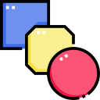
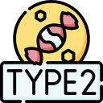
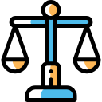
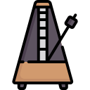

Design Elements and Principles
Graphic Design Elements
Graphic elements are the fundamentals components of graphic design There are currently 7 design elements.
source: Design, John Barsotta
Lines, Shapes, Colours, Textures
Lines lay the groundwork of any graphic design content. These are any type of lines zig zag, crossed, thick, thin etc.
Shapes we have all sorts of shapes like organic shapes such as snowflakes or geometric shapes that are 2 or 3 dimensional. Rectangles are a popular shape for web pages or ad content.
Colours we use the colour wheel that helps create "color harmonies" these are complementary colours, triad color, analogous color, rectangular color and square color schemes.
Colours always provide a blanket of warmth over any design and one I feel is most important.
Textures are sometimes gradient, you could almost feel the texture just by looking at it. Its like using stone, glass, flowers to visual design.
Type, Space, Images,
Type is fonts and is a pretty important part of visual content. Fonts add importance to your message such as bold, italics and is one of the original ways we communicate non verbally.
Space allowing room to breathe between topics.
Images having these well placed and what image you use, leads to some exciting visual content.
Graphic Design Principles
Graphic design principles are guidelines or tools for design. Principles help your designs and how elements all interact with each other.
Contrast, Balance, Repetition
Contrast helps bring certain elements to stand out if one colour needs to be dark in order to bring the other to light.
Balance does exactly what it says. Balance by aliging equally weighted elements, such as a mix of heavy and lighter ones.
Repetition when the same elements are used frequently. A nice consistency which the user can begin to feel the design.
Porportion, Heirarchy and Rhythm
Porportion size of elements to another.
Heirarchy the order of the most important which should be the website name, titles and headers.
Rhythym a steady combination throughout design.
(Pipia, The 7 Elements of Graphic Design 2022)
(Iakovlev, 12 Graphic Design Principles 2023)